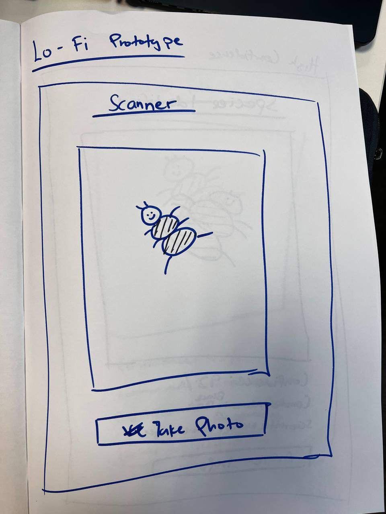
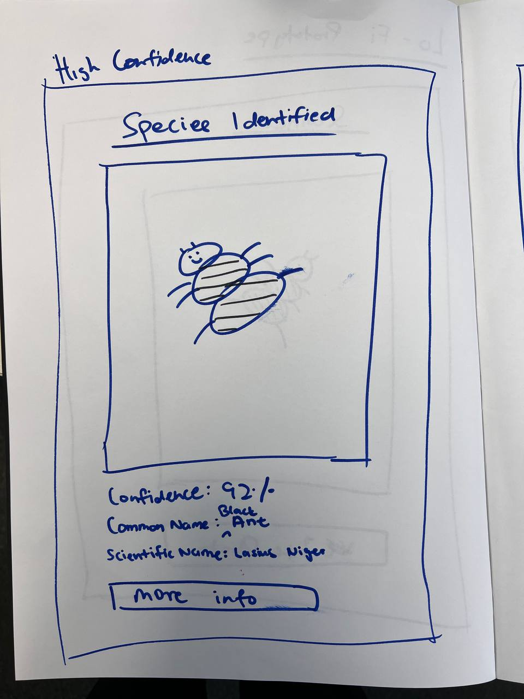
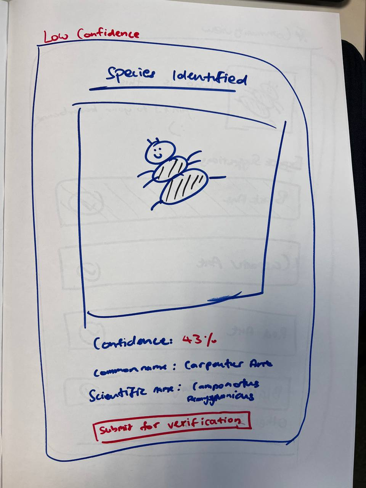
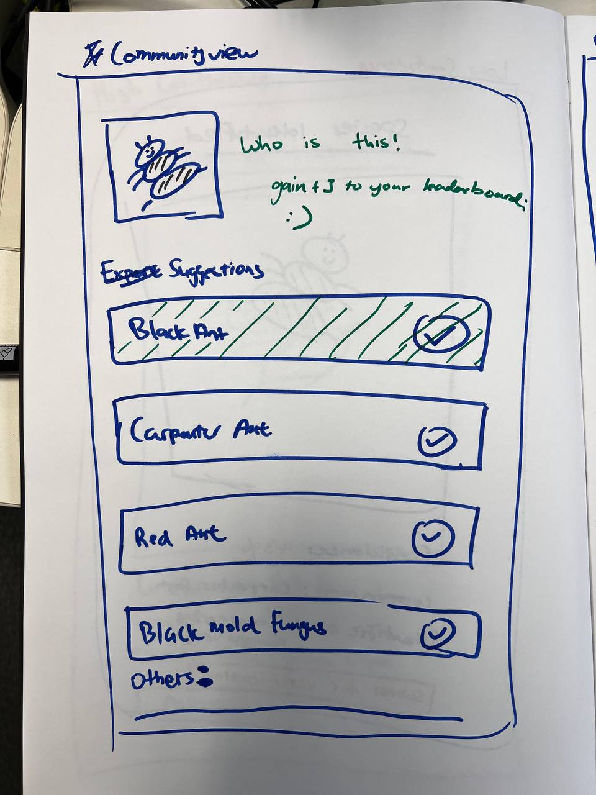
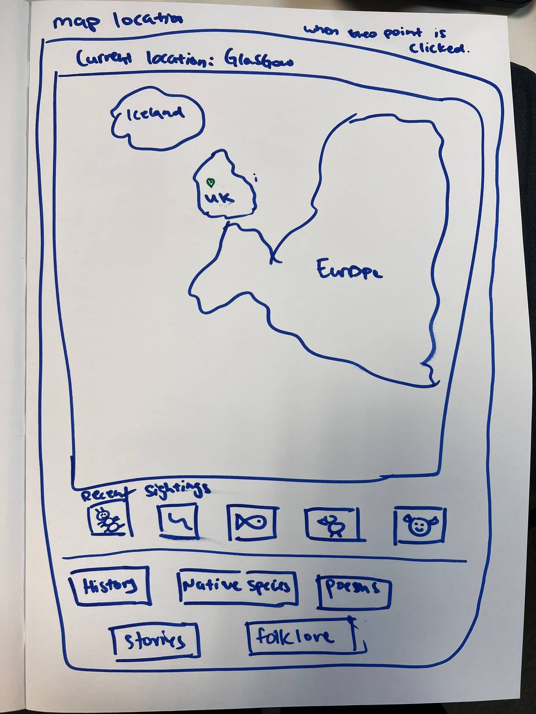

Week 1: Understanding the Problem Space
Initial Idea
Our initial idea was to create a tool that used Artificial Intelligence (AI) to assist with species identification and data collection in the Glasgow Botanic Gardens. Additionally, we aimed to improve the system utilizing a user-friendly interface and seamless integration with existing platforms after reading the project brief. However, we quickly realized that the main way of building a tool is not creating the tool itself just from the brief but rather in-depth understanding of the user needs, the context of use, and the specific challenges faced by the citizen scientists.Our Design Thinking Process
To be able to tackle the issues that the stakeholders are facing, we used the Double Diamond Process framework to guide our design process. Through this framework, the team were able to get more clarity on the problem space and user needs.Gathering Ideas
To effectively prompt the customer into giving the right answer for our question asked, we used "how might we" framework to craft open ended questions. By doing so, it uncovers underlying issues and clarifies ambiguous points from project plan such as having multiple stakeholders to deal with.Client Requirements
After meeting with our client, Chrissy Sanachan from the Friends of Glasgow Botanic Gardens, we have quickly noted down the necessary requirements for the project and identify key insights from the pain points and derived goals. From these discussions, the project aims needs to meet the following concerns:- Preferably little to no budget
- Helps streamline process for Dr Richard.
- MSpecies recording for Botanical Gardens.
- Integrate with existing platforms like iNaturalist as a way of verification.
- Provide educational resources for users.
- Realized focus was too much on the tool, not the people.
- Support verifiers via community + expert input.
Revised Problem Statement from Client
How might we encourage citizens and visitors to collect more sighting data to improve their understanding and educate about their characteristics while maintaining efficient scientific records.Mental Model
Firstly diving into the topic, we had different mental models individually and with little experience in this specific topic, there were many blind spots in our model.Noting the differences in our mental model, we adopted the 10 for 10 framework in order to develop a shared mental model for our team to work together in a single direction.
This allowed us to prioritise what we aim to deliver in this project and if the ideas are all agreed upon and to tackle as much of the problem as possible.
Team Research
Research Steps:- Explore iNaturalist app to understand why it is most popular.
- Look into how they conduct their verification of species.
- Figuring out how to integrate iNaturalist to our platform for extracting data seamlessly.
- Identifying educational resources for users.
- Look into different applications with similar features as INaturalist for references.
Research Findings:
- iNaturalist covers all species identification and contains close to 200 million observations.
- They utilise computer vision and experts for species verification.
- Application Programming Interface is open sourced for data to be downloaded easily, allowing Glasgow City Centre to use our application to gather data easily
- iNaturalist has a strong community of users who contribute to species identification, we can also choose to back it up with sources online for their education purposes
- Most application relies on Artifical Intelligence to do one time verification without having explictly caring about results
Paper Prototype (Lo-Fi)
As part of our design thinking process, we created a paper prototype to visualize the user interface and interaction flow of our proposed solution. This low-fidelity prototype allowed us to quickly iterate on our design concepts and gather feedback from stakeholders, these has been carefully selected through multiple prototypes and iterations to ensure that we are able to create a solution that is both user-friendly and effective in addressing the needs of our users, these prototypes can be viewed:Demonstration

Species Identification (High Confidence)

Species Identification (Low Confidence)

Community View

Map View

This iterative process helped us refine our ideas and ensure that the final solution would effectively communicate the needs of our stakeholders and quick changes of the design can be made based on the feedback on the teams. Additionally, any changes made to the prototype can be easily communicated to the team.
Pitch Video 1
With individual contribution from each team member, we created a pitch video to present our project idea and reflect on the design thinking process we followed. Through this, we can effectively communicate our vision and the steps taken to address the problem statement.Elements such as the problem statement, design thinking process, and paper prototype are all included in the video and this can be viewed by playing the video below: